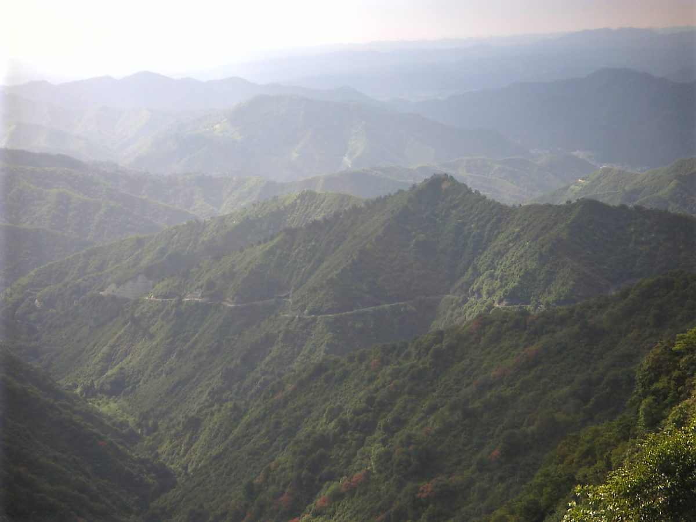
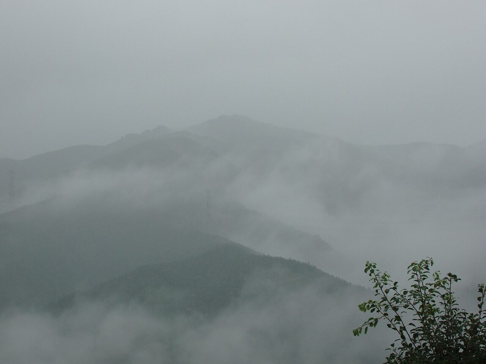

山形県新庄市本町
羽州茶屋
はじめての方へ。まずは、お電話かInstagramから。
羽州茶屋のご案内ページです。いま分かっていることを先に並べ、まだ確認できていないことは「準備中」と正直に書いています。
山並みのイメージ写真
いま分かっていること
- 店名
- 羽州茶屋
- 所在地
- 山形県新庄市本町3-51
- @usyuchaya
- 営業時間
- 準備中(お問い合わせください)


お越しの前に
| 営業時間 | 準備中(お問い合わせください) |
|---|---|
| 定休日 | 準備中(お問い合わせください) |
| 駐車場 | 準備中(お問い合わせください) |
場所は住所でご案内しています。お越しの前に、お電話でご確認いただくと安心です。